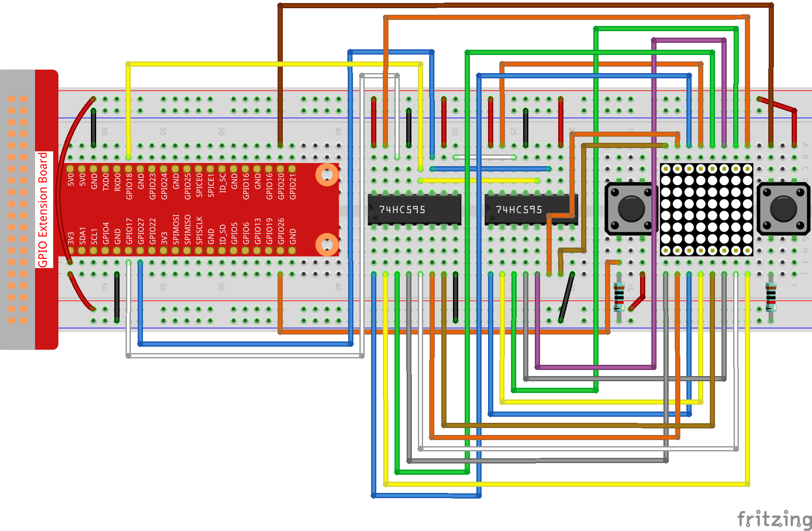

Note
Bonjour, bienvenue dans la communauté des passionnés de SunFounder Raspberry Pi, Arduino & ESP32 sur Facebook ! Plongez dans l’univers du Raspberry Pi, Arduino et ESP32 avec d’autres passionnés.
Pourquoi nous rejoindre ?
Support d’experts : Résolvez les problèmes techniques post-vente avec l’aide de notre communauté et de notre équipe.
Apprendre et partager : Échangez des conseils et des tutoriels pour améliorer vos compétences.
Aperçus exclusifs : Accédez en avant-première aux annonces de nouveaux produits.
Réductions spéciales : Profitez de réductions exclusives sur nos nouveaux produits.
Promotions festives et cadeaux : Participez à des promotions spéciales et des concours lors des fêtes.
👉 Prêt à explorer et créer avec nous ? Cliquez sur [Ici] et rejoignez-nous dès aujourd’hui !
3.1.14 JEU – Not Not
Introduction
Dans cette leçon, nous allons créer un appareil de jeu amusant que nous appelons « Not Not ».
Pendant le jeu, la matrice de points affiche aléatoirement une flèche. Votre objectif est de presser le bouton dans la direction opposée de la flèche dans un temps limité. Si le temps est écoulé ou si vous appuyez sur le bouton correspondant à la même direction que la flèche, vous perdez.
Ce jeu permet de pratiquer votre capacité de réflexion inversée. Voulez-vous essayer ?
Composants

Schéma de montage
T-Board Name |
physical |
wiringPi |
BCM |
GPIO17 |
Pin 11 |
0 |
17 |
GPIO18 |
Pin 12 |
1 |
18 |
GPIO27 |
Pin 13 |
2 |
27 |
GPIO20 |
Pin 38 |
28 |
20 |
GPIO26 |
Pin 37 |
25 |
26 |

Procédures expérimentales
Étape 1 : Construisez le circuit.
{kind=link}
Étape 2 : Accédez au dossier du code.
cd ~/davinci-kit-for-raspberry-pi/c/3.1.14/
Étape 3 : Compilez le code.
gcc 3.1.14_GAME_NotNot.c -lwiringPi
Étape 4 : Exécutez le fichier compilé.
sudo ./a.out
Lorsque le programme démarre, une flèche vers la gauche ou la droite sera affichée aléatoirement sur la matrice de points. Vous devez appuyer sur le bouton correspondant à la direction opposée de la flèche dans un temps limité. Ensuite, un symbole « √ » apparaîtra sur la matrice. Si le temps est écoulé ou si vous appuyez dans la même direction que la flèche, vous perdez et un « x » s’affichera sur la matrice. Vous pouvez également ajouter deux nouveaux boutons ou les remplacer par un joystick pour contrôler quatre directions (haut, bas, gauche et droite) et augmenter la difficulté du jeu.
Note
Si cela ne fonctionne pas après l’exécution ou si un message d’erreur apparaît : « wiringPi.h: Aucun fichier ou répertoire de ce type », veuillez vous référer à C code is not working?.
Explication du code
Basé sur 1.1.6 LED Dot Matrix, cette leçon ajoute 2 boutons pour créer un appareil de jeu amusant. Si vous n’êtes pas encore familier avec la matrice de points, veuillez vous référer à 1.1.6 LED Dot Matrix.
Le déroulement complet du programme est le suivant :
Sélectionnez aléatoirement une direction de flèche et générez le timer 1.
Affichez l’image de la flèche sur la matrice de points.
3. Détectez l’entrée du bouton. Si le bouton est pressé ou si le timer 1 indique que le temps est écoulé, la phase de jugement commence.
Affichez l’image en fonction du résultat du jugement, puis générez le timer 2.
Revenez à l’étape 1 lorsque le timer 2 indique que le temps est écoulé.
struct GLYPH{
char *word;
unsigned char code[8];
};
struct GLYPH arrow[2]=
{
{"right",{0xFF,0xEF,0xDF,0x81,0xDF,0xEF,0xFF,0xFF}},
// {"down",{0xFF,0xEF,0xC7,0xAB,0xEF,0xEF,0xEF,0xFF}},
// {"up",{0xFF,0xEF,0xEF,0xEF,0xAB,0xC7,0xEF,0xFF}},
{"left",{0xFF,0xF7,0xFB,0x81,0xFB,0xF7,0xFF,0xFF}}
};
struct GLYPH check[2]=
{
{"wrong",{0xFF,0xBB,0xD7,0xEF,0xD7,0xBB,0xFF,0xFF}},
{"right",{0xFF,0xFF,0xF7,0xEB,0xDF,0xBF,0xFF,0xFF}}
};
La structure GLYPH fonctionne comme un dictionnaire : l’attribut word correspond à la clé dans le dictionnaire et l’attribut code correspond à la valeur.
Ici, le code stocke un tableau pour que la matrice de points affiche des images (tableau 8x8 bits).
Le tableau arrow est utilisé pour afficher le motif de flèche vers la gauche ou la droite sur la matrice LED.
Le tableau check est utilisé pour afficher les deux symboles : « × » et « √ ».
char *lookup(char *key,struct GLYPH *glyph,int length){
for (int i=0;i<length;i++)
{
if(strcmp(glyph[i].word,key)==0){
return glyph[i].code;
}
}
}
- La fonction lookup() permet de « vérifier le dictionnaire ». Elle prend une
clé en entrée, recherche les mots correspondants à cette clé dans la structure GLYPH *glyph et renvoie les informations associées, à savoir le « code » du mot en question.
La fonction Strcmp() est utilisée pour comparer deux chaînes de caractères glyph[i].word et key. Si elles sont identiques, la fonction renvoie glyph[i].code (comme illustré ci-dessous).
void display(char *glyphCode){
for(int i;i<8;i++){
hc595_in(glyphCode[i]);
hc595_in(0x80>>i);
hc595_out();
}
}
Affiche le motif spécifié sur la matrice de points.
void createGlyph(){
srand(time(NULL));
int i=rand()%(sizeof(arrow)/sizeof(arrow[0]));
waypoint=arrow[i].word;
stage="PLAY";
alarm(2);
}
La fonction createGlyph() est utilisée pour sélectionner aléatoirement une direction (l’attribut word d’un élément du tableau arrow[] : « left », « right »… ). Elle définit ensuite l’étape à « PLAY » et lance une fonction d’alarme de 2 secondes.
srand(time(NULL)) : Initialise la graine de génération aléatoire à partir de l’horloge du système.
(sizeof(arrow)/sizeof(arrow[0])) : Calcule la longueur du tableau, qui est de 2.
rand()%2 : Le reste de la division par 2 donne 0 ou 1.
waypoint=arrow[i].word : Le résultat sera « right » ou « left ».
void checkPoint(char *inputKey){
alarm(0)==0;
if(inputKey==waypoint||inputKey=="empty")
{
waypoint="wrong";
}
else{
waypoint="right";
}
stage="CHECK";
alarm(1);
}
La fonction checkPoint() est utilisée pour vérifier l’entrée du bouton ; si le bouton n’est pas pressé ou si le bouton correspondant à la même direction que la flèche est pressé, le résultat est « faux » et « x » apparaît sur la matrice de points. Sinon, le résultat est « vrai » et la matrice affiche « √ ». L’étape devient alors « CHECK », et une alarme de 1 seconde est définie.
La fonction alarm() est un « réveil » qui déclenche un signal SIGALRM lorsque le temps défini est écoulé.
void getKey(){
if (digitalRead(AButtonPin)==1&&digitalRead(BButtonPin)==0)
{checkPoint("right");}
else if (digitalRead(AButtonPin)==0&&digitalRead(BButtonPin)==1)
{checkPoint("left");}
}
La fonction getKey() lit l’état de deux boutons : si le bouton droit est pressé, le paramètre de checkPoint() est right ; si le bouton gauche est pressé, le paramètre est left.
void timer(){
if (stage=="PLAY"){
checkPoint("empty");
}
else if(stage=="CHECK"){
createGlyph();
}
}
La fonction timer() est appelée lorsque le timer (défini par alarm()) est écoulé. Sous le mode « PLAY », checkPoint() est appelé pour juger le résultat. Si le mode est défini sur « CHECK », createGlyph() est appelé pour sélectionner de nouveaux motifs.
void main(){
setup();
signal(SIGALRM,timer);
createGlyph();
char *code = NULL;
while(1){
if (stage == "PLAY")
{
code=lookup(waypoint,arrow,sizeof(arrow)/sizeof(arrow[0]));
display(code);
getKey();
}
else if(stage == "CHECK")
{
code = lookup(waypoint,check,sizeof(check)/sizeof(check[0]));
display(code);
}
}
}
Le fonctionnement de la fonction signal(SIGALRM,timer) : elle appelle la fonction timer() lorsqu’un signal SIGALRM (généré par la fonction alarme alarm()) est reçu.
Lorsque le programme démarre, il appelle d’abord createGlyph() une fois, puis entre dans la boucle.
Dans la boucle : en mode « PLAY », la matrice de points affiche les motifs de flèche et vérifie l’état du bouton ; en mode « CHECK », elle affiche « x » ou « √ ».